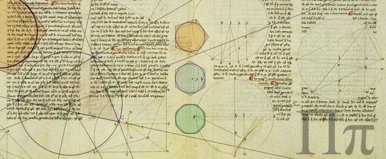

Many of today's well-known theories were developed in ancient India long before. Ancient Indians contributed immensely to the knowledge in Mathematics as well as various branches of Science. Their discoveries can be traced back to 800 BC or even earlier. By the end of this article, you will be able to learn and know more about ancient Indian Scientists and their contributions to today's world.
The above images are written in Devanagari a ancient language originated from the Northern Part of present day India.